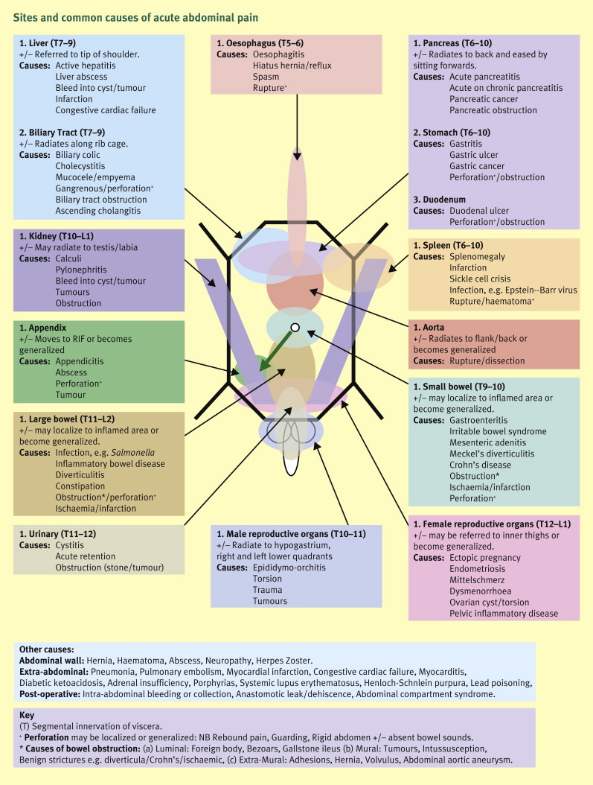

Approach to Symptoms¶
In Taking History: CC, Etiology, Complications
Always ask myself
- what fits
- what does not fit
- what I expect but did not find what additional information do I need?
Patterns¶
Patient Background¶
| Name | Symptoms and Signs |
|---|---|
| Multiple cardiovascular risk factors | HTN, HL, DM |
| Meningism | |
| Increased ICP | Unilateral dilated pupil (surgical CN III), lateral gaze palsy (stretched CN VI), papilloedema, hypertension & bradycardia (Cushing’s reflex), abnormal respi patterns, vomiting |
| Wernicke encephalopathy | Ataxia, confusion, opthalmoplegia |
Symptoms Complex¶
| Name | Symptoms and Signs |
|---|---|
| Meningism | |
| Increased ICP | Unilateral dilated pupil (surgical CN III), lateral gaze palsy (stretched CN VI), papilloedema, hypertension & bradycardia (Cushing’s reflex), abnormal respi patterns, vomiting |
| Wernicke encephalopathy | Ataxia, confusion, opthalmoplegia |
| Fluid overload | |
| Infective | |
| Airway obstruction | |
| Obstructive lung |
Common General Symptoms¶
Drowsy, tachycardiac, febrile patient¶
- Sepsis esp CNS infection
- Thyroid storm
- Heat stroke
- Note estacy is associated with heat stroke
- Sympathetic toxidrome
-
Neuroleptic malignant syndrome
-
Anticholinergic toxidrome
Fever 发烧¶
Traveller's Fever¶
Pyrexia of unknown origin (PUO)¶
Sweat 出汗¶
Chills 发冷¶
Fatigue 疲劳¶
Fatigue is extreme tiredness and lack of energy or motivation for everyday activities.
Malaise¶
Malaise mainly viral infection.
Decreased effort tolerance only when we care about congestive heart failure.
Malaise refers to an overall feeling of discomfort and lack of well-being.
Life Style Issues¶
Lack of sleep Alcohol abuse Unhealthy diet Too much caffeine Not being active enough
Short-Term (Acute) Illnesses¶
A sudden infection that eventually runs its course can shock your body. There are several diseases that are more closely linked with malaise. The most common ones and their symptoms -- in addition to malaise -- include:
| Condition | Features |
|---|---|
| Acute bronchitis or pneumonia | fever, chills, cough, and chest pain |
| Mononucleosis ("mono") | sore throat, headache, and swollen tonsils and lymph nodes |
| Flu | fever, cough, sore throat, runny nose, and body aches |
| Lyme disease | rash, achy or swollen joints, night sweats, and be sensitive to light |
| Hepatitis | flu-like symptoms and have belly pain, dark urine, and pale stools |
| Fibromyalgia | oint pain and tenderness, sleep problems, trouble concentrating, and morning stiffness |
Long Term Illness¶
Malaise can be an early sign or ongoing symptom of long-term illnesses like:
| Condition | Features |
|---|---|
| Kidney disease | nausea, muscle cramps, vomiting, poor appetite |
| Severe anemia | feel dizzy and have pale skin, leg cramps, and a fast heartbeat |
| Diabetes | very thirsty or hungry, dry mouth and blurred vision and polyuria |
| Congestive heart failure | irregular heartbeat, SOB, and wheezing. Your legs might also swell. |
| Arthritis | joint pain, stiffness that improves with activity, and less range of motion |
| Chronic fatigue syndrome | extremely tired, unrefreshing sleep, trouble concentrating |
| Depression | Mental health condition, cranky and helpless |
Any major stress to your body, such as injury or surgery, can also cause malaise.
Weight Changes 体重改变¶
Weight Losses¶
Weight Gain¶
Poor Weight Gain¶
Loss of Appetite 食欲不振¶
Functional Decline¶
Allergy¶
Head and Neurology Symptoms¶
Altered Mental Status¶
Patients often presents with cognitive symptoms, instead of somatic complaints. Acutely, this presents as delirium (acute confusional state) to a spectrum of decreased consciousness from drowsiness to coma (unarousable unresponsiveness). This heralds a serious medical condition requiring urgent workup, and must not be mistaken for the chronic and gradually progressive cognitive symptoms of dementia or depression, which are close differentials.
Two overlapping clinical pictures are described:
-
Decreased consciousness: variably described as drowsiness, stupor, or coma – it is best to use objective measures e.g. GCS.
-
Pathophysiology: Consciousness requires the function of the brainstem reticular activating system, plus ≥1 cerebral cortex. Hence, the cause of ↓ GCS may be:
- Primary brain lesion: this may be a structural lesion involving bilateral hemispheres/brainstem or large enough to cause mass effect, or a generalized non-structural lesion (e.g. seizure)
- Secondary manifestation of systemic pathology: toxic, metabolic, or endocrine derangements which affect bilateral brain structures.
-
Approach: an important early step is to distinguish structural brain from systemic causes. Key discriminators:
-
- Focal neurological deficit: esp of cranial nerves or dysfunctional brainstem reflexes (e.g. light, doll’s eyes, vestibuloocular, cornea, cough & gag reflex) suggest structural brain pathology
- Signs of ↑ ICP: unilateral dilated pupil (surgical CN III), lateral gaze palsy (stretched CN VI), hypertension & bradycardia (Cushing’s reflex), vomiting, papilloedema, abnormal respi patterns suggest structural brain pathology
- Headache, meningism: structural brain pathology
- Involuntary movements: seizures, asterixis, etc. suggest metabolic pathology.
-
Delirium: (or confusion) A transient global disorder of cognition and consciousness, which may be associated with psychomotor and emotional disturbances.
Often a confused or agitated pt – but an unusually quiet pt may have hypoactive delirium.
-
Pathophysiology: precipitating insults superimposed on background vulnerability may manifest as dysfunction of the organ of least reserve. In the elderly, this organ is often the brain. Therefore, delirium is usually not due to structural brain lesions.
-
This is a clinical diagnosis. Its features, according to the confusion assessment method, are:
-
- Course: Acute onset and fluctuating course. Take collateral hx to elicit baseline cognition and how this is an acute change. Beware – at times the pt may not appear delirious.
- Ask very detailed hour by hour or day by day account of what has happened to the patient.
- Attention: Inattention
- Mental: Disorganized thinking (e.g. hallucinations) or altered level of consciousness. Delirious patients may both be hyperactive (agitated, hallucinating) or hypoactive (more often missed), or in between.
| Delirium | Dementia | Depression | |
|---|---|---|---|
| Onset and course | Acute onset (days) & fluctuating course | Insidious onset (months-years) & progressive course (may fluctuate) | Variable onset, if acute a stressor may be identifiable. |
| Orientation | Disorientated (where, who, what time) | Clear until late stages | Usually unimpaired |
| Attention | Inattention, unable to talk | Attentive, often cooperative | Inattentive, not interested to talk |
| Memory | Poor memory | Consistent pattern of amnesia, affecting short-term memory more than long-term memory. | Variable pattern of amnesia, affecting recent & remote events equally; may give ‘don’t know’ ans |
| Insight | Incoherent and illogical | May deny memory problems (attempt to minimise disability), confabulate, or have catestrophic rxn. | Present or impaired. May be concerned abt memory loss (attempt to emphasize disability) |
| Hallucinations | Simple visual hallucinations & illusions are common | Uncommon (except lewy body dementia - visual hallucinations) | Mood-congruent hallucinations possible e.g. derogatory voices |
| Delusions | May have transient & fragmented delusions | Delusions of theft common (e.g. maid steals items) | Mood-congruent delusions possible e.g. nihilistic, poverty |
| Sleep | Disturbed sleep-wake cycle | Sleep-wake reversal; sun-downing | Early-am awakening characteristic |
Etiology¶
Structural
The neurological exam may localize the lesion. In terms of etiology, a structural brain lesion may be:
- Vascular: stroke (infarct or bleed – drowsiness can be prominent in brainstem stroke), SAH. Look for the cause of this cerebrovascular episode.
- Trauma: haemorrhage (EDH, SDH, SAH), diffuse axonal injury. A forgotten episode of mild head injury can present months later as SDH.
- Space-occupying lesion: tumor, abscess, hydrocephalus
Non-structural
Likely precipitants are broad; a framework is helpful. One mnemonic is ‘VITAMIN C’:
- Vascular:
- Hypertensive encephalopathy. Take BP.
-
Hypoperfusion: AMI, heart failure, shock. Look for signs and symptoms, do ECG.
-
Infective:
- CNS: meningitis, encephalitis, cerebral malaria
- Systemic: sepsis, pneumonia, UTI. Identify localizing symptoms and signs (see approach to fever)
- Toxins:
- Substances: intoxication or withdrawal of alcohol or drugs, poisoning/overdose. Look for toxidromes & symptom clusters e.g. Wernicke encephalopathy – ataxia, confusion, opthalmoplegia. This is usually but not always due to alcohol. A confused pt with bizzare nystagmus should receive immediate thiamine!
- Drugs: anticholinergics, narcotics and nor-narcotics analgesics, sedatives, antihypertensives, anticonvulsants, antimicrobial (cefapime), antiparkinsonian drugs, cardiovascular drugs, hypoglycaemics (insulin, suylfonamide), psychotropic drugs (anxiolytic, antidepressant, antipsychotic), and others (cimetidine, high-dose steroids like 1mg/kg, xanthines). Take drug hx, ask if new meds have been started, and ask abt traditional medicine.
- Autoimmune: CNS vasculitis, cerebral lupus. Rare.
- Metabolic & endocrine: do glucose, U/E/Cr, LFT, åABG as a minimum.
- Glucose: Hypoglycemia or HHS/DKA
- Electrolytes: imbalances, over-rapid correction (central pontine myelinolysis).
- Pulmonary: hypoxia, hypercapnia
- Liver: Hepatic encephalopathy
- Renal: uremia, dehydration
- Endocrine: thyroid storm, myxedema coma, adrenal insufficiency
- Vitamin deficiency e.g. B12, folate, thiamine
- Environmental: heatstroke, hypothermia
- Ictal (Epilepsy): absence seizures, post-ictal state
- Comfort factors
- Urinary or fecal retention. Palpate for bladder.
- Severe pain: e.g. unknown fractures. Examine.
- Others: psychogenic stupor (depression, psychosis)
History¶
- History + very detailed medication history is required
- Look out for age > 65 year old
- Dementia
- Hospitalization
- Acute injury or illness
- Post-operative state
- Acute stress (loss of spouse, change of environment)
- Impaired ambulation or non-ambulatory status
- Underlying neurological impairment
- Cancer
Physical Exam¶
- Close attention should be given to the underlying illness
- Focus the physical examination on the cardiovascular, neurologic, and psychiatric systems.
- The physical evaluation should include an assessment of the patient's level of arousal and orientation. Patients who lack alertness or have a clouded consciousness will need this to be closely observed
- Mental State Exam
- GCS
- AMT
- MMSE
Work Up¶
-
Basics:
-
Vitals + SpO2,
- blood glucose
- FBC, Blood culture + Specific cultures (MSU, urine etcs)
- U/E/Cr, Ca
- ABG
- LFT
- TFT
- ECG
- Urinalysis /MSU
- Serum B12 and folate
-
Lumbar puncture
-
Suspect structural cause:
-
CT brain initially; MRI is more sensitive. Image before lumbar puncture.
-
Detailed neuro exam. Note: bilateral miosis or mydriasis may be due to toxins and not neurology.
-
Suspect non-structural cause: based on suspicion
-
- Infective: urinalysis, urine culture, blood culture, CXR, lumbar puncture, other serologies.
- Inflammatory markers e.g. CRP, procalcitonin
- Endocrine: thyroid, adrenal function.
- Drug: Serum drug levels, toxicology screen
- EEG if uncertain whether there are seizures
- Others:: B12, folate, ferritin, autoimmune, endocrine
Management¶
- Where possible withdraw or reduce any drugs causing confusion
- Correct biochemical derrangements
- If there is a high likelihood of infection (e..g abnormal urinalysis or chest xray), treat promptly with appropriate antibiotics.
- Urinary catheter: relieve exacerbating symptoms (pain, urinary retention, constipation, thirst)
- Avoid major tranquillisers where possible
- Monitor AMT
- Communicate with relatives
Management
- Adequate fluid intake and nutrition
- Adequate mobilisation and physical exercise
- Adequate medication (e.g. for pain); check the appropriateness of drug combinations and dosages
- Avoid withdrawal phenomena due to rapid cessation of substances on which the patient may be dependent
- Monitor closely in the preoperative period
-
Avoid excessive sensory stimulation
-
Good lighting levels
- Repeated orientation (clocks, calendars, newspapers, familiar objects)
- Repeated reassurance, ideally by the same person
- Sensory aids where necessary (glasses, hearing aids)
- Avoidance of physical, emotional, or chemical restraints
- Minimal distractions, calm environment (consider side room)
- Approach and handle gently
- Avoid multiple ward transfers
- Maintenance / restoration of normal sleep patterns
- Encouraging visits from familiar friends / family (and "distraction therapists")
Sedation
- Sedation should be avoided if at all possible. They cause worsening of confusion and increase risk of falls. However, it may be necessary in the following circumstances
- In order to carry out essential investigations / treatment
- To prevent patients endangering themselves or others
- To relieve distress in highly agitated or hallucinating patients
- Wandering is not an indication for drug treatment. Decision to treat should be multidisciplinary.
Headache 头痛¶
Two key differentiating points in history are time course of pain, and localized vs generalized – classify headaches as acute generalized, acute localized, chronic progressive, episodic, and others.
Acute generalized headache¶
These causes of headache may be life threatening and must always be excluded:
-
Bleed:
-
Subarachnoid haemorrhage: “worst headache ever”, sudden onset with pain maximal within seconds or minutes, neck stiffness. This is easy to miss if patients are alert and talking – a past hx of migraine does not exclude new haemorrhage, always ask if there is a change in the nature of a chronic headache
-
Subdural haemorrhage: More subacute than SAH; often an initial concussion, a lucid interval, followed by drowsiness. Have high index of suspicion in the elderly and in pts with bleeding diathesis or on anticoagulants – it may not present with headache
-
Haemorrhagic stroke: usually does not present with headache, but not impossible.
-
Meningitis (& encephalitis): fever, neck stiffness, resistance to passive neck flexion (meningismus), photophobia. However the majority of patients do not have these classic symptoms – clinical suspicion is important. Look for concomittant infection and the purpuric rash of meningococcemia. Rule out 2° sources e.g. sinusitis, base of skull osteomyelitis, dental infection, etc.
-
↑ Intracranial pressure: nausea, vomiting, early morning headache worsened by coughing, straining, or lying supine, papilloedema, false localizing VI nerve palsy, unequal pupils, and Cushing’s reflex (↑ BP, ↓ HR). This can be due to a space occupying lesion, edema from cerebral ischemia, hypertensive encephalopathy, etc.
-
Hypertension may cause headaches esp if SBP >160 & DBP >120; headache should resolve within 1h after normalization of BP. Exclude 2° causes.
Acute localized headache¶
This is characteristic of referred causes of headache:
- Acute close-angle glaucoma: unilateral headache often starting with severe eye pain, blurring of vision, and halos around lights. Eye is red with fixed, moderately dilated pupil.
- Infections: upper respiratory tract infections, otitis media, sinusitis, dental disease. Sinusitis causes constant dull pain, maximal over the affected sinus, exacerbated on leaning forward.
- Trigeminal neuralgia: Intense but transient stabs of pain in a unilateral trigeminal nerve distribution, causing the face to screw up with pain (tic doloureux). This is often idiopathic but secondary causes include trigeminal nerve root compression.
- Giant cell arteritis (temporal arteritis): Usually a throbbing headache localized on the temporal area. The temporal artery may be tender on palpation or indirect palpation e.g. hair combing; it may also be erythematous, thickened, and pulseless. There may also be intermittant unilateral visual loss and jaw claudication. Suspect in >50 year olds, ESR usually ↑ - diagnose promptly to avoid blindness.
Need to watch for acute glaucoma: mid dilated pupils, VA affected. EASILY MISSED! Time sensitive treatment.
Episodic recurrent headache¶
This is characteristic of the primary headache disorders.
- Tension headache (69%): bilateral tight bandlike (non pulsatile) discomfort which builds slowly, fluctuates in severity, and may persist for days. Accompanying features of migraine are absent.
- Migraine (16%): episodes of unilateral, pulsating headache with additional features e.g. sensitivity to triggers (light, sound, movement), nausa/vomiting, neurologic dysfunction (even numbness, weakness). Some patients report an aura e.g. visual ∆s (flashing lights, zigzag lines), sensory, motor, or speech ∆s that may mimic a transient ischemic attack. Patients prefer to keep still during attacks. Most patients with disabling headache probably have migraine.
- Cluster headache (0.1%): typically, explosive pain recurring in daily short-lasting bouts, for 1-3 months with months of pain-free periods. This headache is associated with ipsilateral autonomic signs such as tearing, rhinorrhorea, miosis, ptosis. Patients tend to move about during attacks.
In addition:
- Pheochromocytoma: paroxysmal episodes of headache, palpitations, tachycardia & hypertension. Have a high index of suspicion if the pt has family history or MEN2; see workup under hypertension.
Chronic progressive headache¶
Often insidious. Red flags include ↑ pain in the morning, on lying down, coughing, or Valsalva; focal neurological deficits, behavioural and memory changes.
- Space occupying lesion e.g. brain tumor, abscess: usually a deep dull aching (like migraine), often early-morning, assoc with nausea and vomiting.
- Acromegaly: watch for progressively coarsening facial features, increasing shoe size. Ask for old photos and examine for bitemporal hemianopia.
Others¶
- Trauma involving the meninges can trigger a headache lasting years, this is poorly understood
- Iatrogenic:
- Medication: vasodilators (e.g. nitrates), medication overuse headache (episodic headache treated with analgesics, that becomes chronic)
- Low CSF pressure: over-shunting of ventriculo- peritoneal shunt, post lumbar puncture.
- Alcohol, recreational drugs and withdrawal, recent smoking cessation (nicotine withdrawal)
Work Up¶
Red flags
- Neurological
- Altered mental status, drowsiness, or seizures.
- Focal neurological abnormality (other than aura) suggests mass lesion
- ↓ visual acuity: acute glaucoma, temporal arteritis
-
Pain History
-
- Past headaches: acute severe headache or change in character of chronic headaches is worrying
- Worsening trend: implies mass lesion, subdural hematoma, or medication overuse.
- Fever: to rule out meningitis
- Onset with exertion: possible bleed
- Radiation down the neck and btw the shoulders suggests infection or subarachnoid bleed as both cause meningeal irritation
-
Trauma – in the elderly, even minor trauma can lead to subdural hematoma much later
-
Patient factors:
- Elderly
- Systemic illness: HIV or immunosuppression causing opportunistic infection, cerebral lymphoma; cancer with potential cerebral mets, lyme disease, previous ventriculoperitoneal shunt.
- SAH: family history (has genetic determinants), adult polycystic kidney dx.
- Medications: anticoagulants, NSAIDs, illicit drugs can ↑ risk of intracranial bleeding
Investigation
Headache is common; often the best investigation is to listen to the patient and let him/her tell you who/what the headache is. Investigations are not always rewarding, but where serious pathologies are suspected, they are certainly warranted:
-
CT/MRI mandatory if there are red flags or unexplained abnormal findings. Look for blood (white on CT) in sulci and basal cisterns (SAH), meningeal enhancement (meningitis), and space occupying lesions.
-
Lumbar puncture: have a low threshold for LP if SAH or meningitis is suspected, even if imaging is normal.
-
Two caveats:
- ↑ ICP is a contraindication to LP, for fear of coning. CT/MRI before LP if suspecting ↑ ICP.
- Difficulty obtaining LP should not delay treatment of meningitis. Possible LP findings:
-
Lumbar Puncture Infective Pictures
Normal Bact TB, fungi Viral App Clear Turbid Fibrin Clear WBC < 5 mm3 ↑↑ ↑ ↑ WBC diff Neut Mononuc Mononuc (neut early) Protein 0.2 - 0. 4 g/L ↑ ↑ Normal Glucose ½ - ⅔ plasma <½ plasma <½ plasma >½ plasma - Normal opening pressure: 6 – 15 cm H2O (intracranial hypertension: >25 cm H2O)
-
Infective workup: order cytospin, biochem, lactate, gram stain & culture, ± viral PCR (HSV, VZV, enterovirus), ± TB smear, culture, PCR, ± fungal smear & culture, cryptococcal antigen. Do a paired serum glucose for comparison. See table for results and interpretation.
-
Haemorrhage: look for xanthochromia (yellow discolouration due to Hb breakdown), which is more reliable than finding RBCs on cytospin (may well be traumatic tap).
-
Blood tests: cultures for meningitis, syphillis and HIV serology if suspected. Cryptococcal antigen is more sensitive than india ink stain.
Presyncope / Syncope 要晕倒 / 失去知觉¶
Dizziness 头昏眼花¶
Vertigo 晕眩¶
Weakness¶
Sensory Disorders¶
Numbness¶
Paraesthesia¶
Movement Disorders¶
Tremor¶
Gait Abnormality¶
Clumsiness¶
Loss of Balance¶
Paralysis¶
Loss of Memory¶
Seizures¶
Focal Neurology¶
Cranial Nerve Palsies¶
Altered Mental Status¶
Change in Behavior¶
Eye Symptoms¶
Vision Reduction* 视力退步¶
Blurring of Vision 视线模糊¶
Visual Spots 黑点¶
Visual Flashes 闪亮光¶
Complete Visual Loss¶
Diplopia* 复视¶
Painless Redness 红眼¶
Painful Eye 眼睛疼¶
Discharge 眼部分泌物¶
Excess Tearing 眼泪过多¶
Ear Symptoms¶
Hearing Impairment 听力退步¶
Earache 耳朵疼¶
Ear Discharge 耳朵分泌物¶
Tinnitus 耳鸣¶
Nose Symptoms¶
Change in Smell 嗅觉改变¶
Epistaxis 鼻出血¶
Runny Nose 流鼻涕¶
Stuffy Nose 鼻塞¶
Oral Cavity¶
Toothache 牙痛¶
Gum Bleed 牙床出血¶
Sores 口疮¶
Change in Taste 味觉改变¶
Throat¶
Sore Throat 咽喉痛¶
- Tonsilitis 扁桃腺炎
Dysphagia 吞咽困难¶
Odynophagia¶
Hoarseness 声音嘶哑¶
Voice changes 声音改变¶
- Slurred speech, think stroke.
Neck and Lymph Nodes¶
Stiff Neck 颈部僵硬¶
Pain in the Neck 颈部疼痛¶
Lymphadenopathy 淋巴腺肿大¶
Breasts¶
Lumps 硬块¶
Discharge 分泌物¶
Pain 痛¶
Heart¶
Angina¶
Palpitations 心悸¶
Irregular Heartbeat 心律不整¶
Sinus Tachycardia¶
Differentials

-
Anemia is usually Folate / B12; some Fe deficiency requiring referral to Gastro for scope
-
Don't forget coffee as an offensive drug
-
Danger must rule out: PE
Murmurs¶
Respiratory¶
| Clinical Pictures | Symptoms |
|---|---|
Respiratory Infection¶
- Is there an infection?
- Where is the infection
- Who is the host and therefore what are the likely pathogens
- What tests do I need to do? Will they change my management?
- What is the severity? (And therefore disposition?)
- What should I treat with?
- When do I follow up?
- How do I prevent this?
Dyspnoea 呼吸困难¶
Dyspnoea is the sensation of shortness of breath (SOB) or difficulty breathing. Its pathophysiology is complex and the term represents several sensations including
- exertional dyspnoea
- orthopnoea (dyspnoea exacerbated if supine)
- stridor (harsh monophonic breathing sound, usually in inspiration),
- and hyperventilation.
There are likely to be signs of respiratory distress e.g. tachypnoea, use of accessory muscles, and there may be ↓ SpO2.
A related condition is acute desaturation (↓ SpO2). The clinical presentation is often striking. Hypoxia may cause dyspnea and agitation. Concomittent hypercapnia should be suspected if there is drowsiness, headache (cerebral vasodilation), bounding pulses, and asterixes.
Dyspnoea can also be divided into
- Acute (min) or subacute (hours), and / or desaturation
- This may be a previously well patient with new dyspnea / desaturation, or an acute exacerbation of chronic dyspnea
- Chronic: stable patients with chronic dyspnea
Causes
| Acute | Subacute | Chronic | |
|---|---|---|---|
| Cardiac | AMI, Acute valve, Arrhythmia |
CCF, pericardial dx |
CCF |
| Respi | Upper airway Asthma Pneumothorax PE |
Asthma Pneumonia Effusion COPD |
ILD COPD Infection Tumor |
| Others | Fluid overload DKA GBS, MG Poisoning |
Anemia |
Acute Dyspnea, Desaturation¶
There are multiple clinical pictures
The symptom complex is most helpful. Based on history, physical examination, bedside ECG, ABG, glucose, identify one of the following clinical pictures:
- SOB/desat + chest pain: think cardiac, e.g. AMI, pneumothorax, and PE. This is discussed in the approach to chest pain and not covered here.
- SOB/desat + stridor: upper airway obstruction
- Fluid overload picture: acute pulmonary edema, or fluid overload from heart or renal failure; Orthopnea, PND
- **Infective picture: **pneumonia
- Wheeze picture: obstructive lung dx
- Non-specific ↑ effort of breathing: a mixed bunch including respiratory and metabolic pathologies.
- SOB/desat + weakness: think neuro dx
- Desaturation + hypoventilation, no dyspnoea: suppressed respiratory drive.
- Diagnoses of exclusion
Upper airway obstruction¶
Dyspnoea/desaturation + stridor. Stridor is a harsh inspiratory sound. It suggests upper airway narrowing.
Etiologies:
- Foreign body: uncommon in adults, ask for hx.
- Anaphylaxis: histamine release following allergen exposure (e.g. food, drugs, venom, pollen) causes angioedema of skin and soft tissue (non-puritic plaques, facial swelling) and upper airway (stridor), bronchoconstriction (dyspnoea, wheeze) and vaso- dilation (↓ BP, syncope)
- Croup: RSV usually does not cause stridor in adults
- Epiglottitis: high fever, sore throat & odynophagia causing drooling, supraglottic swelling leading to stridor, dyspnoea, and muffled (hot potato) voice. Due to H. influenza vaccination, this is no longer a paediatric disease!
- Retropharyngeal abscess: as for epiglottitis but milder, and with neck rigidity or difficulty turning, uvula deviation
- Post neck surgery: neck hematoma, recurrent laryngeal nerve injury.
- Smoke inhalation: e.g. after escape from a fire.
Evaluation
- Evaluation: mainly clinical. Monitor airway patency.
- Lateral neck X-ray: for thumb sign (epiglottitis), soft tissue swelling ant to vertebral body (retro- pharyngeal abscess). Foreign bodies may be radio- opaque or radiolucent.
-
**Infective workup: ** e.g. FBC, CRP, cultures, DM
Fluid Overload Picture¶
The clinical presentation varies based on the time course.
- Acute pulmonary oedema: this pt develops sudden and unexpected respiratory distress, a sensation of ‘drowning’ (literally quite true), ± pink frothy haemoptysis (rare if not on TV). On examination, the pt has basal lung creps, pedal edema, ↑ JVP ± S3 gallop. There may be hemodynamic compromise (↑ HR, ↓ BP) or cardiogenic shock. Urgently workup for the cause:
- Acute myocardial infarction: easily missed when chest pain is absent or vague, as often happen in diabetics, the elderly, and in women. Hence look carefully for any diaphoresis and always do ECG! (See approach to chest pain for ECG)
- Acute valve dysfunction: e.g. acute mitral regurgitation due to papillary muscle rupture, which can happen due to infarct. Auscultate for murmur.
- Arrhythmia: ask abt palpitations. Do ECG, treat arrhythmia, and repeat ECGs to evaluate for underlying causes (often ischemia).
-
Acute nephritic syndrome: refer to approach to rising creatinine.
-
Subacute fluid overload: this is the pt with orthopnoea and paroxysmal noctural dyspnoea, worsening over the past 1-2 days. On examination, the pt appears ‘wet’ with coarse inspiratory creps in bilateral lung bases, pedal edema, ↑ JVP ± S3 gallop. Causes:
-
Acute decompensated heart failure: longstanding congestive cardiac failure + a superimposed insult. Look for this precipitant so that it can be addressed – e.g. ischemia, arrhythmia, non-compliance with fluid restriction, systemic illness
- Fluid overload from renal failure: consider this in ESRF patients – weigh the pt and compare to usual dry weight. Fluid overload is often due to missed or incomplete dialysis – explore why, e.g. vascular access issues, intra-dialysis hypotension (rule out a cardiac event), or line infection. Alternatively, fluid overload may be from non-compliance to dialysis or fluid restriction – again quite common (after all, diabetics who go on to ESRF tend not to have been very faithful with insulin!). Apart from ESRF, acute nephrtic syndrome may present as fluid overload which may be acute or subacute.
- Pericardial effusion & cardiac tamponade: two flavours
- acute trauma or wall rupture presenting as cardiogenic shock
- subacute accumulation of fluid from infective, uremic, neoplasic, post-MI or autoimmune causes causing dyspnoea and a fluid overload picture. This is often diagnosed on the basis of low-voltage ECGs, muffled heart sounds ± pericardial rub. Other clinical findings are ↓ pulse pressure and pulsus paradoxes (abnormally large ↓ BP on inspiration)
- Decompensated cirrhosis: there will also be prominent ascites and jaundice. See jaundice.
Work up
- Bedside: ECG
- Labs:
- cardiac enzymes (ischemia)
- Plasma NT-proBNP: useful to distinguish cardiac from renal causes of fluid overload: >1000 pg/ml confirms a cardiac etiology.
- For complications: electrolytes esp. renal failure
- Specialised testing
- 2D echography (valve problems, effusion)
- continuous ECG monitoring (arrhythmia)
Infective picture¶
This dyspnoea is accompanied with fever, rigors, cough ± chest pain (if there is pleuritis). Examination reveals ↓ breath sounds, dullness, and localized creps; also look for parapneumonic effusion (table).
Workup: also see approach to fever.
- Assess severity: check vitals. See CURB-65
- Consider if this is more than a simple community- acquired pneumonia: e.g. hospital acquired (hospital stay in last 90 days, nursing home resident), prior antibiotics, or risk factors for aspiration pneumonia (e.g. neuro dx, dementia, elderly)
- CURB 65 for patient disposition in CAP: 0-1 outpatient, 2-3 GW, 4 - 5 ICU
- Confusion
- AMT ≤8,
- Urea > 7 mmol/l,
- Resp rate ≥30 bpm,
- BP < 90/60, Age ≥ 65.
- Sputum: gram stain and culture, AFB PCR and culture.
- Labs: Infective work-up:
- FBC, CRP, U/E/Cr,
- and if the pt is sick, also blood cultures, ABG, lactate.
- Can also consider mycoplasma and legionella serology.
- Chest X-ray: lobar ‘white-out’, patchy infiltrates, or blurring of heart or diaphragmatic borders confirms pneumonia. However radiographic features may lag behind clinical findings, so a negative X-ray does not exclude pneumonia. CXR is also good to look for differentials and complications e.g. effusion.
Wheeze Picture¶
This is usually obstructive lung dx; airflow obstruction or chemoreceptor stimulation from hypoxia or hypercapnia ↑ work of breathing, causing dyspnoea. Examine for expiratory rhonchi, hyperinflated chest, and tracheal tug (see table). The distinction btw COPD and asthma is not always straightforward and there are overlaps.
- Chronic obstructive lung disease (COPD): a dx of elderly smokers with a many pack-year history. Symptoms are chronic and slowly progressive; but a subacute exacerbation should prompt the qn ‘why’. This is usually infective (see later – pneumonia) but may also be due to pneumothorax or cancer (more slowly progressive).
- Asthma: a dx of younger non-smokers with family history and atopic symptoms (e.g. eczema, allergic rhinitis). Symptoms are episodic. An exacerbation may be due to allergen exposure or infection – ask abt infective symptoms. This is often coupled with non-compliance to preventer inhalers (steroids) and over-use of relievers (salbutamol) – ask abt use of inhalers. Assess severity (below) and identify high- risk factors e.g. past hx, previous intubation, ICU, multiple admissions or A&E visits for asthma.
- Cardiac asthma: beware – acute heart failure may present with symptoms that mimic asthma. Always look for signs of fluid overload – see previous.
- Anaphylaxis: a very acute presentation; see earlier.
Workup: a more detailed workup is described under chronic dyspnoea. In an acute exacerbation, do –
- Assess saturations: SpO2 monitoring, ABG. Pt may hyperventilate, causing respi alkalosis; normal pH or acidosis prompts concern of pt tiring out.
- Chest X-ray: for ddx - pneumothorax, pneumonia.
- Peak flow meter: decrease in peak expiratory flow confirms obstructive lung dx, and extent of ↓ risk-stratifies in asthma. Cardiac causes of dyspnoea tend not to cause ↓ PEFR. This also helps to identify severity – hypercapnia does not set in until PEFR <25% of normal (standard table for height)
- Others: FBC, UECr for ↓ K from salbutamol • Infective workup: see pneumonia.
Workup: a more detailed workup is described under chronic dyspnoea. In an acute exacerbation, do
- Assess saturations: SpO2 monitoring, ABG. Pt may hyperventilate, causing respi alkalosis; normal pH or acidosis prompts concern of pt tiring out.
- Chest X-ray: for ddx - pneumothorax, pneumonia.
- **Peak flow meter:**decrease in peak expiratory flow confirms obstructive lung dx, and extent of ↓ risk- stratifies in asthma. Cardiac causes of dyspnoea tend not to cause ↓ PEFR. This also helps to identify severity – hypercapnia does not set in until PEFR <25% of normal (standard table for height)
- Others: FBC, U/E/Cr for ↓ K from salbutamol • Infective workup: see pneumonia.
Severity of Asthma Exacerbations: 2 symptoms, 3 vitals, 2 labs
| Mild | Moderate | Severe | |
|---|---|---|---|
| SOB | Walking | Talking | Resting |
| Talks | Sentences | Phrases | Words |
| RR | ↑ | ↑ + distress | ↑↑ + distress |
| HR | <100 | 100 - 120 | >120 |
| SpO2 | > 95% RA | 91 - 95 % RA | < 90% RA |
| PEF | >80% pred | 60 - 80% pred | < 60% pred |
| pCO2 | normal | normal | Raise pCO2 |
Nonspecific ↑ effort of breathing¶
A mixed bag of causes - probably the most challenging type of dyspnoea to approach. Think systematically; take history, examine (see table), do capillary glucose and ECG. A bedside approach is presented, classified by the presence or absence of chest signs, then the workup
Chest signs present: ↓ expansion, ↓ breath sounds, and
- **Pleural effusion: **stonydull±bronchialbreathing above the effusion. This is not a diagnosis, but a presentation - look for underlying causes.
- - Unilateral effusion is usually exudates; consider parapneumonic effusion (infective symptoms), malignant (hx of lung CA, cough, cachexia, clubbing, scars) and tuberculous effusions (hx, cough)
- - Bilateral effusion is usually transudate. Ask for features of heart failure, nephrotic syndrome or renal failure, hepatic hypoalbuminaemia, or autoimmune dx e.g. SLE/RA.
- Pneumothorax: hyper-resonance ± ↑ JVP , tracheal deviation if late. This usually gives acute dyspnoea and pleuritic chest pain, but air can sometimes take time to accumulate. See approach to chest pain for further discussion.
No chest signs: these occult causes are easily missed if not consciously thought of.
- Pulmonary embolism (PE): classically pleuritic chest pain, dyspnoea, ± hemoptysis (pulm infarct). However presentation is often subtle - unexplained ↓ SpO2, ↑ RR, ↑ HR; subacute massive PE mimics heart failure. Exam is usually normal; look for signs of DVT e.g. unilateral leg pain, swelling, erythema. ECG findings include S1Q3T3, sinus tachycardia, T inversions, right heart strain, or non-specific findings (see approach to chest pain). Have a high index of suspicion in pts with risk fx – think Virchow’s triad: flow stasis (immobilization, surgery), hyper-coagulability (cancer, pregnancy; see approach to thrombosis), and endothelial damage (vasculitis). Severe acute dyspnoea with no clinical signs, normal CXR and non-specific ECG is very suspicious for PE.
- Diabetic ketoacidosis: with metabolic acidosis, the body attempts respiratory compensation; this causes dyspnoea or even Kussmaul breathing. DKA is easy to pick up if blood glucose is checked – this should be routine for all dyspneic patients. There is usually a precipitating cause – look for infection, cardiac ischemia, etc.
- **Other causes of metabolic acidosis: **e.g.poisons (e.g. salicylates, ethylene glycol). Other poisons e.g. organophosphates can cause respi secretions and bronchospasm
- Anemia: usually chronic dyspnoea, but if there is acute exacerbation, workup for acute causes e.g. GIT bleeding.
General workup: Start with –
- Chest X-ray: confirms pneumothorax or effusion, and looks for ddx.
- ABG: to identify compromise to oxygenation (↓ PaO2) or ventilation (↑ PCO2). In PE there will be ↓ PaO2 and normal or ↓ PCO2 (hyperventilation)
- Routine: FBC, cardiac enzymes to rule out AMI
Specific workup: based on clinical suspicion. This is not an exhaustive list.
-
For PE:
-
Wells Score for Prediction
Category Points Symptoms of DVT 3 No better alternative 3 Tachycardia > 100 1.5 Immobilisation >3/7 or surg in past 4/52 1.5 Hx of DVT / PE 1.5 Hemoptysis 1 Cancer 1 - ≥ 7 likely, 2 - 6 moderate; ≤ 1 low
-
Bedside ultrasound: venous compression of lower limbs for DVT, heart for RV dilation and LV underfilling
-
D-dimers: Negative D-dimers rule out PE if pre-test probability is low, but not if pre-test probability is high. Positive D-dimers do not imply PE and further investigation is needed.
-
Definitive: CT pulmonary angiogram (not ‘CT chest’ as contrast is different). This has largely replaced V/Q scans.
-
For pleural effusion: do pleural tap. Inspection may reveal if the fluid is an effusion, hemothorax or chylothorax. Send fluid for cytology, biochemistry (protein, glucose, LDH, amylase), gram stain, culture, and AFB stain or PCR. For effusions, Light’s criteria states that exudate is likely if protein in pleural fluid > 1⁄2 that of serum, or pleural LDH > 0.6 that of serum or >⅔ upper limit of serum.
-
For DKA: UECr for ↑ K and dehydration (↑ urea, ↑ Na), serum osmolarity, serum and urine ketones. Look for cause: e.g. cardiac enz, septic workup.
-
For poisoning: poison levels are available for some poisons (e.g. salicylate). Calculate osmolal gap from measured osmolality - calculated osmolality (2 Na + glucose + urea): if ↑ toxic alcohol poisoning is likely - these are osmotically active substrates captured in measured but not calculated osmolality.
Dyspnoea/desaturation + Weakness¶
Neurological disease can cause weakness of respiratory muscles, difficulty breathing, and acute respi failure. In addition to respiratory difficulty, pts may have general weakness – e.g. difficulty walking, difficulty speaking, or ptosis. Etiologies include myasthenic crisis, Guillain-barre syndrome, and motor neuron dx.
Workup:
-
See approach to weakness for etiological diagnosis
-
Negative inspiratory force(NIF):assessseverity
of weakness, and need for assisted ventilation.
Inappropriate hypoventilation¶
Desat + hypoventilation, no dyspnoea: The striking feature here is inappropriate hypoventilation in spite of low SpO2. There is suppression of respiratory drive. Consider differentials based on premorbids and clinical course:
-
COPD pt: chronic type 2 respiratory failure over- treated with O2
-
Trauma victim: ICP near coning, high cervical spine injury, flail chest.
-
Drowsy pt: over-sedation with opiates or sedatives.
-
Neurological pt: e.g. gullian-barre, myasthenia
gravis (see above).
Diagnoses of exclusion¶
The following diagnoses should only be accepted as an explanation of dyspnoea if the pt is well, there are no red flags, and all other workup is unrewarding
- Psychiatric: Anxiety, somatization disorder, hyper- ventilation.
- MSK: deconditioning, obesity, kyphoscoliosis.
- Diaphragmatic splinting from large ascites
Chronic Dyspnea¶
Patients may have previous cardiac & respiratory history but do not assume that dyspnoea is due to to the same longstanding problem.
Heart Failure Picture¶
Heart failure is the broad syndrome encompassing any cause that ↓ cardiac output, which may cause dyspnoea. Such dyspnoea tends to be exertional, or as orthopnea or paroxysmal nocturnal dyspnoea (which pts may report as being woken up at night feeling that the room is ‘stuffy’), and fatigue. Ask abt the no. of pillows used to sleep. Look for signs of volume overload e.g. S3, cardiomegaly, ↑ JVP, basal lung crepitations, and ankle edema.
Etiology**:** cardiac failure may be systolic or diastolic, due to
- High-output heart failure: e.g. due to anemia, thyrotoxicosis, Paget's dx. Ask for features of these conditions.
- Hypertensive heart disease: due to longstanding, poorly-controlled hypertension causing LV hypertrophy and eventual failure.
- Ischemia: a consequence of multiple old infarcts, whether symptomatic or silent. These patients are vasculopaths with multiple risk fx e.g. hypertension, DM, hyperlipidemia, and smoking.
- Complication of valvular heart disease or congenital ASD, VSD: examine for murmur.
- Cardiomyopathy: usually dilated cardiomyopathy, either genetic or acquired (e.g. alcohol, chemo, viral, autoimmune). Presentation is varied.
- Beware cor pulmonale due to respi disease. Look for fx of pulm hypertension (loud P2, parasternal heave)
Work up
- Bedside
- ECG: for old infarcts (Q waves), hypertrophy (S in V1 + R in V5 or V6 > 35mm), or arrhythmia. Use 24h ambulatory ECG if suspecting paroxysmal arrhythmia.
- Labs
- NTproBNP: to confirm heart failure
- Other bloods: FBC, thyroid function test, vascular risk factors e.g. BP, fasting glucose, lipids
- Imaging
- CXR: for cardiomegaly, pulmonary edema.
- Special Tests
- Echocardiogram: for systolic & diastolic function, ventricular wall motion defects, hypertrophy or dilatation, valve dx and cardiomyopathy. Further imaging includes cardiac MRI or nuclear cardiology for viability.
- Cardiopulmonary exercise testing: if etiology is still unclear.
Respiratory Conditions¶
- Obstructive dx: asthma is episodic while COPD causes baseline dyspnea with flares (see earlier). Consider levels of control in asthma (below)
- Interstitial lung dx: exertional dyspnoea, non-productive cough. Exam may find fine inspiratory crepitations ± clubbing. Causes include:
- Occupational: asbestosis, silicosis
- Hypersensitivity: e.g. extrinsic allergic alveolitis (bird fancier’s lung, farmer’s lung)
- Drugs: nitrofurantoin, bleomycin, sulfasalazine, amiodarone.
- Rheumato: RA, sarcoidosis, SLE, systemic sclerosis, ulcerative colitis
- Idiopathic: e.g. idiopathic pulmonary fibrosis.
- Chronic infection: e.g.TB,fungus.Askabtcough, fever, night sweats, haemoptysis, and personal and exposure hx.
- Tumor: lung cancer or metastases may present insidiously with dyspnoea. Ask abt weight loss, risk factors e.g. smoking. Examine for consolidation, cachexia, lymph nodes. Ddx is sarcoidosis.
Workup
-
Labs:
-
ABG to assess severity.
- Do FBC, CRP for inflammative changes or eosinophilia.
-
Do ANA, rheumatoid factor for autoimmune involvement.
-
Imaging:
-
chest X-ray, CT, high-resolution CT. Look for nodules, hyperinflation and bronchiectasis (COPD), reticulonodular shadows or honeycomb patterns (interstitial lung dx)
-
Special
-
Spirometry: first distinguish obstructive disease (FEV1/FVC < 70%) from restrictive disease (FEV1 and FVC are low but FEV1/FVC normal). If obstructive, differentiate asthma from COPD – reversibility (salbutamol ↑ FEV1 >15% and 200mL) or +ve methylcholine challenge test (FEV1 ↓ >20%) suggest asthma.
- Allergic workup: skin prick test for atopy, exhaled NO test (e.g. asthma, eosinophilic bronchitis)
- If infection suspected, do sputum culture. Bronchoalveolar lavage or biopsy may be necessary.
Pleuritic Chest Pain¶
Cough 咳嗽¶
Differentiating descriptors of cough
-
Dry: environmental irritant, asthma
-
Wet/productive: lower-respiratory infection
-
Barking: croup, subglottic disease, foreign body
-
Brassy or honking: habit cough, tracheitis
-
Paroxysmal: pertussis, chlamydia, mycoplasma, foreign body
-
Worse at night: asthma, sinusitis, allergic or vasomotor rhinitis (postnasal drip)
-
Disappears at night: habit cough
-
Associated with gagging or choking: gastroesophageal reflux disease
Review of systems clues for a school-aged child with cough
- Change in voice: Dysphonia or hoarseness may suggest laryngeal irritation due to chronic rhinitis or gastroesophageal reflux.
- Chest pain: Probe for evidence of gastrointestinal causes of cough, not cardiac conditions; true cardiac chest pain is rare in children. Alternatively, you could also ask the patient if she \"ever gets a bad taste in her mouth\" or \"if food ever comes back up.\" While rare, congestive heart failure, most commonly due to infectious myocarditis, can present in school-aged children with cough and wheezing and can easily be mistaken for a more common pulmonary condition, such as asthma or bronchitis.
- Choking event: Although a foreign body aspiration is more likely in a toddler, otherwise healthy school-aged children and adults are still at a small risk for aspiration pneumonia secondary to inadvertently choking on food. Children with neurological impairment are at a significantly higher risk for aspiration, either from secretions (\"above\") or from refluxed gastric contents (\"below\").
- Fever: Suggests an infectious etiology for cough, primarily pneumonia and sinusitis. Lobar pneumonia, particularly in the lower quadrants, may also present with abdominal pain mimicking appendicitis. The presentation of bacterial pneumonia is usually acute, rather than chronic.
- Headaches: Frontal or orbital headaches may suggest a sinusitis, a common cause of persistent cough in children due to the associated post-nasal drip, which is often worse at night when the child is supine.
- Sore throat: May suggest evidence of post-nasal drip and pharyngeal irritation due to allergies or sinusitis. (May be present in conjunction with nasal congestion, and/or a history of itchy, watery eyes.)
Fever and Cough¶
Use anatomy to guide this
- URTI
- Common cold
- Acute pharyngitis / larygnitis
- Acute sinusitis
- Acute bronchitis
- Pneumonia
- CAP
- HAP
- Aspiration
- TB
- Opportunistic infection: pneumocystis jirovecii pneumonia
1) To determine if there is URTI or pneumonia
- DO CXR OR NOT?
- Start antibiotics or not?
- Do pleural tap or not?


Hemoptysis 咳血¶
Sputum 痰¶
Breathing Sound 气喘声¶
- Stridor or wheezing
Abdominal¶
Acute Abdominal Pain¶
Dangerous things to rule out
- Vascular conditions: mesenteric ischemia, aortic dissection, rupture of abdominal aneurysm
- Surgical conditions: appendicitis, cholecystitis
Easily missed diagnosis
- Muscle strain of abdominal wall
- Herpes Zoster
There are three types of pain
- Somatic pain
- Visceral pain
- Referred pain
Pathophysiology
- Luminal obstruction
- Inflammation
- Peritonitis
General Approach¶
Evaluation is driven by location
- Systems for reference
- Gastrointestinal:
- Gastric: Gastritis, GERD, peptic ulcer disease, gastric outlet obstruction,
- Liver: acute or chronic hepatic failure with resulting complications (e.g., ascites), acute hepatitis (e.g., viral, autoimmune, alcoholic, drug-induced), abscess
- Gallbladder / Billary System: biliary colic, cholecystitis/cholelithiasis, cholangitis
- Pancreas: pancreatitis, pancreatic cancer, pancreatic ischemia
- Bowel: food poisoning, inflammatory bowel disease, intestinal ischemia, intestinal obstruction, irritable bowel syndrome, diverticulitis/diverticulosis, appendicitis, perforation/peritonitis (e.g., gastric, colonic, intestinal), tumor (e.g., gastric, hepatic, pancreatic, intestinal, colonic)
- Lymph nodes: mesenteric adenitis
- Cardiac: Myocardial infarction, angina pectoris, abdominal aortic aneurysm dissection or rupture.
- Pulmonary: Pleurisy, lower lobe pneumonia, pulmonary infarction, tumor.
- Psychogenic: Anxiety, panic disorder, somatoform disorder, post-traumatic stress disorder.
- Renal: Nephrolithiasis, pyelonephritis, UTI, testicular torsion, epididymo-orchitis cystitis, tumor.
- Haemotological: splenic infarct, splenic rupture, AAA rupture
- Musculoskeletal: Abdominal wall muscle strain, hernia (e.g., ventral, inguinal, incarcerated), abscess (e.g., psoas, subphrenic), trauma (e.g., contusion, hematoma), cutaneous nerve entrapment.
-
Metabolic and nutrition: Drug overdose, diabetic ketoacidosis, iron or lead poisoning, uremia, acute intermittent porphyria, hypercalcemia, Medication, vitamin, and herbal supplement side effects, Dietary factors, Heavy metal poisoning, Familial Mediterranean fever, Angioedema
-
Conditions not easily picked up in a location driven approach
- Abdominal wall: strain, hernia, herpes zoster
- Others: IO, mesenteric ischemia, peritonitis, narcotic withdrawal, sickle cell crisis, porphyria, IBD, heavy metal poisoning
| Conditions | Right | Center | Left |
|---|---|---|---|
| Upper | Pulmonary: PE, pneumonia Renal: UTI, pyelonephritis, nephrolithiasis Hepatic: abscess, hepatitis, mass Biliary: cholecystitis, cholelithiasis, cholangitis |
Biliary: cholecystitis, cholelithiasis, cholangitis Cardiac: angina, MI, pericarditis Gastric: Esophagitis, gastritis, PUD Pancreatic: mass, pancreatitis Vascular: Aortic dissection, mesenteric ischemia |
Cardiac: angina, MI, pericarditis Gastric: Esophagitis, gastritis, PUD Pancreatic: mass, pancreatitis Vascular: Aortic dissection, mesenteric ischemia Renal: UTI, pyelonephritis, nephrolithiasis |
| Middle | Gastric: Esophagitis, gastritis, PUD GI: Early appendicitis, IO |
||
| Lower | Appendicitis / peritonitis, colitis, diverticulitis, IBD, IBS Gynaecological: ectopic pregnancy, fibroids, ovarian mass, torsion, PID Renal: cystitis, nephrolithiasis, pyelonephritis |
Appendicitis / peritonitis, colitis, diverticulitis, IBD, IBS Gynaecological: ectopic pregnancy, fibroids, ovarian mass, torsion, PID Renal: cystitis, nephrolithiasis, pyelonephritis |
Sigmoid diverticulitis (most common) hence focus of investigation. Colitis, IBD, IBS Gynaecological: ectopic pregnancy, fibroids, ovarian mass, torsion, PID Renal: cystitis, nephrolithiasis, pyelonephritis |

-
History
-
Should be from a non-sedated patient
- Get the location, radiation, movement first
- Then general information about onset, duration, severity, quality of pain, as well as exacerbating and remitting factors
- Get associated symptoms
- Check red flags:
- Fever
- Protracted vomiting
-
Pre-syncope, syncope, evidence of GIT bleed
-
Physical
-
General: vitals and appearance
- Peritonitis lies very still, vs renal colic cannot stay still
- Fever suggest an infection
- Tachycardia and hypotension suggest hypovolemia
-
Location of the pain guides the remaining exam
- Upper GI pain: check lungs for pneumonia and heart for ischemia
- Carnett's sign (increased pain when a spin patient tenses the abdominal wall by lifting head and shoulders of the examination table) for abdominal wall pain
- Murphy's sign for cholecystitis: only 65% of adult patient with cholecystitis, and unreliable in older patients
- Psoas sign for appendicitis
- Non specific peritoneal signs: rigidity and rebound tenderness
-
Rectal examination
- Fecael impaction
- Palpable mass
- Occult blood in the stool
- Tenderness and fullness on the right of the rectum suggest a retrocaecal appendix
-
Pelvic examination
- Vaginal discharge for vaginitis
- Cervical motion tenderness for ectopic pregnancy or other gynaecological complications such as salpingitis, tube-ovarian abscess 2/2 PID
-
Diagnostic Tests
-
POCT
- UPT is important in women of childbearing age to narrow the ddx and to determine whether certain imaging studies are appropriate.
- Bloods
- FBC for infection or blood loss
- Simultaneous amylase and lipase for pancreatitis
- Liver chemistry
- Other Fluids
- Urinalysis
- Swab for chlamydia and gonorrhoea
-
Imaging
-
Recommendation by AAFP is based on location
Left Right Upper U/S Endoscopy or upper GI series ( if esophageal or gastric pathology); CT (others); Lower CT with IV contrast CT with IV and Oral Contrast - Suprapubic: U/S
- CT is better than U/S for diagnosing appendicitis and can detect extracolonic causes of abdominal pain
- Radionuclide imaging is slightly better than U/S for detecting acute cholecystitis but is more expensive, takes longer to perform and cannot assess diagnoses outside of the biliary tract.
-
Plain radiography
- Upright for free air under the diaphragm (either CXR or Abdo xray)
- Abnormal calcifications
- 10% of gallstones
- 90% of kidney stones
- 5% appendioliths (in patients with appendicitis)
- Help diagnose IO or paralytic ileus, due to multiple dilated loops of bowel and air-fluid levels
Special pain: Colic¶
Colic is a sharp, localised pain that increases, peaks, and subsides. It is associated with numerous disease and generally indicates obstruction or irritation of a hollow viscus. The mechanism is thought to be smooth muscle contraction proximal to a partial or complete obstruction.
- Central
- Acute gastroenteritis
- Intestinal obstruction in large or small bowel
- Mesenteric ischaemia: associated with high mortality and prompt diagnosis is crucial albeit often difficult. Sudden severe pain associated with minimal abdominal signs and forceful bowel evacuation in a patient with risk factors should greatly heighten suspicion for the diagnosis. Risk factors include advanced age, atherosclerosis, low cardiac output states, cardiac arrhythmias, especially atrial fibrillation, severe cardiac valvular disease, recent myocardial infarction, and intra-abdominal malignancy.
- Flank pain
- Renal colic
- RUQ Biliary colic
- Acute cholecystitis
Note that
- Adhesion colic as a diagnosis probably does not exist since uncomplicated adhesions are 'not thought to cause pain. However, in the setting of a postoperative patient, an incomplete or subacute bowel obstruction due to adhesions can produce a typical colicky pain.
Special Population: childbearing age women¶
Always think about pregnancy!!!
Women of childbearing age present a specific challenge when making decisions about diagnostic imaging. Gynecologic cause of abdominal pain are more common in these women, and radiation exposure should be avoided if pregnancy is likely.
Possible pelvic organ pathologies to consider: ovarian cysts, tubo-ovarian abscess, endometriosis, ectopic pregnancy, loss of pregnancy
-
Start with UPT!
-
Abdominal or transvaginal U/S is preferred for evaluating left lower quadrant pain in women of childbearing age and in pregnant women with right lower quadrant pain
- If ectopic pregnancy is suspected, transvaginal U/S should be performed.
- A negative pregnancy test and normal U/S findings can virtually exclude ectopic pregnancy
- If pregnancy test is positive or if there is any abnormality in U/S; do a transvaginal U/S. Sensitivity of transvaginal U/S for detecting ectopic pregnancy is 95% in a patient with a positive pregnancy test (hCG ≥25 mIU per mL) and any abnormal U/S finding.
Special Population: Elderly¶
Disease frequency and severity may be exaggerated in this population
- Higher incidence of diverticulitis
- Higher incidence of sepsis in those with UTI
Presentation may differ in older patients
- Compounded by poor patient recall
- Reduction in symptoms severity
Take special care to consider the following which are often missed and yet fatal
- Occult UTI
- Perforated viscus
- Ischemic bowel disease
Cases¶
- A 28-year-old female who presents with two types of abdominal pain for two weeks: sharp, intermittent epigastric pain aggravated by stress and food and also achy pelvic pain worsened by activity and sexual intercourse. She reports associated nausea, vomiting, and alternating loose stools and constipation. Her last menstrual period was four weeks ago; she is sexually active without birth control and has many psychosocial stressors and reports her husband drinks alcohol frequently but she rarely drinks. Physical examination is notable for mid-epigastric and lower abdominal tenderness, numerous ecchymoses across her abdomen and extremities, cervical motion tenderness, and a small amount of yellowish malodorous vaginal discharge.
Abdominal Distension¶
Abdominal Mass¶
GI¶
Heartburn¶
Hematoemesis¶
Nausea and Vomiting¶
Diarrhea¶
Constipation¶
Jaundice¶
- Know the pattern of obstructive jaundice
Blood in Stool¶
Black Stool¶
Light Colored Stool¶
Rectal Mass¶
GI Tract Bleeding¶
GIT bleeds can present as syncope or near-syncope, dyspepsia, or epigastric pain. Patients with a history of haematemesis, melaena, or haematochezia are at much higher risk for repeat GIT bleed.
- Overt - BGIT
- Occult - present with Fe deficiency anemia
- Obscure - no source of bleeding identified even after scope
Approach¶
Goals
- To identify shock and resuscitate: correct fluid losses and restore BP / perfusion.
- To identify potentially reversible causes of the bleeding (both systemic, e.g. over-anticoagulation, and local).
- To identify physiologic derangements resulting from blood loss (cardiac ischaemia, acute kidney injury, or symptomatic anaemia requiring blood transfusion).
Process
-
Assess haemodynamic stability: check patient vitals
-
Assess for the source of bleeding:
-
Is this truly GI Bleeding?
- Bear in mind the possibility of non-GI sources, e.g. haemoptysis or bleeding from the oropharynx. The corollary is that GI bleeding may still be present despite a non-GI source being found.
- Always be aware that aortic aneurysm (aortoenceric fistula) may present as GIT bleeding.
-
Is this an upper or lower GI bleeding?
The ligament of Treitz demarcate the junction between upper GI bleeding vs lower GI bleeding.

Upper GI Bleeding Lower GI Bleeding Oesophageal varices bleeding esp in patients with liver cirrhosis (2-9%) Massive upper GI bleeding Oesophagitis Inflammatory bowel disease Wallory weis tear (5%) Diverticular disease Gastric erosion Angiodysplasia Peptic ulcer disease (35 - 50%) Hemorrhoids Duodenitis Rectal disease Malignancy Malignancy / polyps Vascular malformations (5%) Aorto-duodenal fistula (0.2%) -
Melaena: sticky shiny porridge like; bad smell
-
14 hr transition

- Hematochezia: stool mixed with blood

- Frank bleeding: usually lower GI

- Iron stools: greenish tinge

-
-
Assess the severity of the bleed and risk factors
-
Rule out perforation - acute abdomen
- Red Flags
- Alcoholism
- Trauma
- Disproportionate pain
- Abnormal vitals
- Active melena
- Anti-coagulants
- Liver cirrhosis - associated with massive variceal disease
- Patients on beta blocker may not have tachycardia in response to hyovolemia
- In hematemesis, be concerned about airway issue if the patient has low O2 sats
- Duration
- Symptoms of lower Hb: SOB, chest pain, giddiness
- Alarm Symptoms (LOA/LOW change in bowel habit dysphagia, palpable mass)
- Previous bleeding,. Including endoscopes and Hb
- Comorbidities (chronic liver disease, kidney, heart disease)
- Drugs (NSAIDS, TCM, alcohol, anticoagulant)
-
Family history of cancer / bowel disease
-
Assess the presence of complication (how does it affect the patient)
-
Hypovolemic shock
- Anemia: chest pain for ischemic cardiac disease, SOB, chest pain, postural hypotension, dizziness, acute kidney injury
- Disease complication: perforation, sepsis
Physical Exam
- Note general appearance
- ABC
- Haemodynamic status: pallor, cold, and clammy, peripheries, capillary refill time, tachycardia, hypotension (especially postural), urine output, AMS
- Abdominal exam for tenderness
- Perform DRE again if unsure
- Examine for the stigmata of chronic liver disease: loss of axillary hair, spider nevi, gnecomastia, palmar erythema
- Examine Eye, Abdomen, and always do a rectal examination to establish whether frank melaena is present, or if it is due to local bleeding from the anal canal/perianal area.
Investigation
- POCT: orthostatic hypotension
- Bloods:
- FBC: Hb <7 to initiate transfusion
- PT/PTT: PT for liver function
- GXM
- LFT: liver function derangement, ALT and AST ratio, GGT and ALP elevation, low albumin
- Renal panel: metabolic acidosis, AKI, urea and creatinine for severity- blood will be digested in upper BGIT
- Cardiac Enzymes: ischemia and end organ damage
- Non blood fluids
- ECG
- Imaging
- CXR - air under the diaphgram
Prognosis or Risk Stratify
- Rockall score
- Blatchford score
Management of haemodynamically normal patients¶
-
To identify shock and resuscitate: correct fluid losses and restore blood pressure/ perfusion.
-
Patients must be managed in the critical care area.
- Maintain airway. Consider intubation if haematemesis is copious and the patient is unable to protect his own airway, e.g. depressed mental status from previous cerebrovascular accident (CVA).
- Provide supplemental high-flow oxygen to maintain SpO 2 at >94%,
- Establish two or more large-bore peripheral IV lines (14/16G).
-
To identify potentially reversible causes of the bleeding (both systemic, e.g. over- anticoagulation, and local).
-
Bedside: point-of-care tests
- Vitals and ECG q5 min
- Pulse oximetry
- VBG, Hb, lactate, pH
- Labs:
- GXM for at least four units
- FBC, urea/electrolytes/creatinine, coagulation profile.
- Order liver function tests if the patient is jaundiced.
- Order cardiac enzymes if there is ECG evidence of myocardial ischaemia/injury.
- Imaging: x-ray
-
To identify physiologic derangements resulting from blood loss (cardiac ischaemia, acute kidney injury, or symptomatic anaemia requiring blood transfusion).
-
Fluid
- Infuse 1 L normal saline rapidly and reassess parameters.
- Arrange for blood transfusion if there is no significant improvement after the initial fluid challenge.
- If loss blood, give blood
- Upper GI bleed
- Proton pump inhibitors: IV omeprazole 80 mg bolus followed by infusion at 8 mg/h
- Mortality benefit only for asian population
- Variceal bleeds: Somatostatin 250 mcg bolus then 200 mcg/hr
- Note that somatostatin has very short half-life
- In ED teaching we were taught 200 mcg/hr but in the IM teaching we were taught that it is 250 mcg/hr
- Liver cirrhosis: antibiotics IV ceftriaxone 2 g stat then OM 5/7 for bleeding in any cirrhotic patient
- Reduce rate of infection and improve mobility and mortality
- Erythromycin 250 mg IV 20 min before endoscopy for pro-kinetic action.
- Blatchford (upper) and Oakland (lower) Score for admission of patients with GIT
- Inform sensors (reg on call, ward reg/con) get gastro involved
Genitourinary¶
Oliguria¶
Polyuria¶
Dysuria¶
Frequency¶
Hesitancy¶
Trouble Starting Stream¶
Trouble Stopping Stream¶
Trouble Maintaining Stream¶
Incontinence¶
Nocturia¶
Bed-wetting¶
Hematuria¶
Proteinuria¶
Edema¶
Facial edema¶
Lower Limb edema¶
General edema¶
Genitalia¶
Scrotal Swelling and Pain¶
Genital Ulcers¶
Genital Discharge¶
Genital Pruritus¶
OBGYN¶
Vaginal Discharge¶
¶
Back and Limbs¶
Neck Pain¶
Lower Back Pain¶
Back pain can be mechanical, rheumatoid, vascular, or visceral in organ.
Red Flags for Dangerous Cause
- Spinal cord compression: Weakness or numbness in a leg or arm, Foot drop, disturbed gait, structural deformity, spreads down one or both legs
- Cancer: worse at night, thoracic pain, Age of onset <20 or >55 year old, History of carcinoma, unexplained weight loss
-
Infection: worse at night, high fever, warm spots to touch
-
AAA or Abdominal Aorta Dissection: pain or throbbing in the abdomen
-
Hx of Trauma - whether the patient had a recent fall from a height or a traffic accident;
-
Hx of immunosuppresion: Any steroid use, Ill health or any other medical conditions.
Red Flags for Severity or Dangerous Complication
- Cauda equina syndrome: Loss of control of bowel or bladder, saddle anesthesia (numbest of the anus, perineum, or genitals)
Causes
- Problems with the way spine moves or other mechanical problems
- The most common of which is disc degeneration. Discs are tissue between the vertebrae that function as a type of shock absorber; the discs can break down with age.
- Lumbar disc herniation.
- Anklyosing spondylitis
- Scoliosis
- Spinal stenosis
- Nerve root problems
- Injuries: Sprain or fracture
- Organ problems
- Kidney stone
- Pregnancy
- Endometriosis
- Worrying things
- Infection
- Primary or metastatic carcinoma
Complications
- Radiculopathy
- Cauda equina syndrome
Painless Lower Limb Swelling¶
Painful Limb¶
Joint Pain¶
Joint Swelling¶
Joint Stiffness¶
Cramp in Legs¶
Skin¶
Color Change¶
Rashes¶
Faced with a rash, consider morphology, distribution, onset and course, symptoms, and any drug history. This approach is sorted by morphologic groups:
- Eczematous and scaling rashes: puritic rashes ± excoriations, scaling (light-coloured skin flakes that fall off easily), and lichenification (thick epidermis with accentuated skin markings).
- Vesicles, bullae & pustules: intra-epidermal fluid- filled or pus-filled papules. These lesions may also leave crust - adherent dried serum & debris which can be scraped off (less easily than scales) to leave a weeping base.
- Erythematous non-scaly rash: erythematous non-scaly macules and papules that blanch on pressure.
- Dark non-blanchable rash: hyperpigmented non-blanchable macules and papules. Classic ‘bruises’ fall into this category.
Eczematous and scaling rashes¶
Eczematous and scaling rashes can mainly be divided into two (overlapping) groups (if unsure consider both)
- Dermatitis group: intensely puritic eczematous rashes with indistinct borders. The hallmark of chronic dermatitis is lichenification – visible, palpable epidermal thickening with accentuated skin markings.
- Papulosquamous group: scaly papules, plaques, and patches; usually well-demarcated and puritic (may be mild to severe). Be sure to distinguish scale from crust (see intro).
Dermatitis group
Note: ‘eczema’ is technically synonym for dermatitis, but may mean ‘atopic dermatitis’ if used without qualification.
1. Is there a secondary cause? These have a treatable underlying cause which should be addressed –
- Contact dermatitis: this may be allergic or irritant, and may take a regular pattern (e.g. linear, rectangle, distinct borders) conforming to the area of contact (e.g. beneath the watch). Every dermatitis patient deserves an exposure history. Look for these causes and consider patch testing to confirm
- Hands: occupational/household chemicals, gloves
- Wrist, ears, belt: jewellery, watch, belt with nickel.
- Face and neck: cosmetics
- Others: creams, topical medications
- Perineum: moisture, esp if on diapers
- Stasis dermatitis: eczematous lower limb hyper- pigmentation, especially above the medial malleolus (gaiter region). The cause is venous hypertension; varicose veins and even venous ulcers may be present. See the approach to lower limb pain & ulcer.
-
Exclude scabies: always consider especially if ‘eczema’ affects finger and toe webs, wrists, axillary and pubic folds, or if there is +ve family hx. While scabies usually presents as puritic papules, it may resemble dermatitis if the patient has scratched a lot – look for burrows and send scrapings (see below).
-
If absent, consider idiopathic etiologies
-
Atopic dermatitis: this starts in childhood and has a chronic relapsing course. It especially affects the flexor surfaces (cubital and popliteal fossa), and often extends beyond. There is an atopic setup; rash worsens with certain environmental exposures (e.g. food and inhalent allergens), and the patient often has atopic comorbids (e.g. asthma, allergic rhinitis, food allergy). Patch testing may be helpful.
- Xerotic eczema: dry, fissured skin
- Nummular eczema: coin-shaped patches, usually multiple, which start erythematous and turn dry and scaly.
- Seborrhoeic dermatitis: affecting mainly hair (see papulosquamous group)
Papulosquamous group
1. Can this be fungal?
- **Dermatophyte fungi (tinea, ringworm): **annular patches with elevated, well-defined, serpiginous borders ± central clearing. This may affect the groin (tinea cruris), foot (tinea pedis, athlete’s foot), face (tinea faciale) or elsewhere (tinea corporis), and are usually asymmetrical. Do a potassium hydroxide (KOH) smear for all itchy patches – this may find the spores and hyphae of tinea.
2. Identify the main causes based on distribution –
- Psoriasis: erythematous papules and plaques with silvery scales, classically affecting scalp, elbows, and knees. These may be few and large (e.g. chronic plaque psoriasis) or small and many (e.g. guttate psoriasis), and usually more symmetrical than tinea. Removal of scales reveals small bleeding points (Auspitz sign), and skin trauma aggravates lesions (Koebner phenomenon) Nails involvement is common (pitting, onycholysis, discolouration), and theree may also be arthritis (see approach to joint pain). This is a chronic longstanding disease; withdrawal of systemic steroids may trigger a flare.
- Nummular (discoid) eczema: oval, weeping patches and plaques with crusted papulovesicles.
- Pityriasis rosea: this starts as a herald patch on the trunk (resembles tinea). 2-5 days later, the patient develops tan or salmon-coloured oval scaly papules and patches on the trunk and proximal limbs, in a ‘christmas tree’ pattern (following skin cleavage lines), with colarette scales (arranged in a ring). This is thought to be an immune reaction to herpes viruses 6 & 7, and self-resolves in 6-8 weeks.
- Pityriasis lichenoides - et varioliformis acuta (PLEVA) & chronica (PLC): crops of erythematous papules on trunk and limbs appearing over weeks- months; with central necrosis and haemorrhagic crusting (in PLEVA), or central mica-like scales (in PLC), or hyper/hypo-pigmentation (post-inflam- matory), or any combination of lesions.
- Seborrhoeic dermatitis: this affects mainly hair (scalp, axillary, pubic), eyebrow, and nose, ranging in severity from dandruff (fine scale) to severely greasy plaques and patches.
-
Lichen planus: puritic purple planar polygonal papules and plaques with white streaks. These are not scaly but resemble psoriatic plaques – see erythematous non-scaly rashes
-
Consider systemic disease and sinister causes
-
Discoid lupus: plaques which begin purplish-red and scaly, then turn depressed and atrophic (often with a hyperpigmented border). These are usually found on sun-exposed skin (face, trunk, arms). This may be skin-limited disease or systemic lupus (SLE) – ask about symptoms of possible SLE, do ANA and dsDNA testing, and consider biopsy.
- Malignant & premalignant causes: the first clue is often that the lesions looks ‘atypical’ or thick. A biopsy is necessary to confirm or exclude.
- Mycosis fungoides: a cutaneous T-cell lymphoma, initially indistinguishable from psoriasis or eczema (may be irregular or look atypical to an experienced eye), which gradually becomes elevated, indulated, then nodular or ulcerative.
- Extramammary Paget’s dx: suspect this in a chronic ‘eczematous rash’, ‘lichen simplex’ or ‘psoriatic plaque’ in the groin that does not improve with steroids. It may arise from skin cancer or from underlying anorectal or bladder adenocarcinoma.
- Bowen’s disease (squamous cell carcinoma in-situ): irregular, asymmetrical, erythematous scaly or crusted plaque.
- Actinic keratosis: scaly patch or papule on sun-exposed skin.
- Secondary syphillis: a great mimic; consider esp if palms and soles are involved, or completely non- puritic. Take a sexual hx and do VDRL & RPR.
- Drug eruptions: e.g. antimalarials (chloroquine), lithium, beta-blockers
Vesicles Bullae and Pustules¶
Look at the content of these papules and decide if they are filled with pus (pustules) or clear fluid. Clear blisters are sorted by size as vesicles (small <0.5cm) and bullae (larger >0.5cm).
PUSTULES ± VESICLES
Pustules are neutrophil collections representing infection or inflammation. Their distribution is key.
Predominantly face
- Acne: usually a young person (10-30y) with papules and pustules, open and closed comedones (black- and whiteheads) in the face & upper trunk. Rule out 2° causes e.g. cosmetics, drugs (steroids, phenytoin, lithium), Cushing dx. In females consider polycystic ovarian syndrome (see approach to amenorrhoea).
- Rosacea: often a middle-aged patient with chronic erythema and telangiectasia of the central third of the face (nose and medial cheeks). There may be papules and pustules, blepharitis, conjunctivitis, and frequent flushing; comedones are absent. This is an inflammatory dx of unknown etiology.
Asymmetrical, localized: more likely an infective cause
- Herpes zoster (shingles): vesicles and pustules on an erythematous base, in a dermatomal distribution (unlike varicella zoster), often with pain and puritus. Zoster in the CN V1 dermatome can cause sight- threatening corneal involvement. Zoster in the immunocompromised pts can be disseminated and life-threatening. Consider Tzanck smear.
- Impetigo (non-bullous): S. aureus skin infection can present anywhere as pustules which quickly break to form a honey-coloured crust. Scraping crust away leaves a non-ulcerated glistening base. Gram stain of the crust finds gram positive cocci.
- Candidiasis: satellite papules & pustules around a beefy red patch (see erythematous non-scaly rash).
Symmetrical, generalized – angry looking with background of erythematous skin:
- Acute generalized exanthematous pustulosis (AGEP): an acute generalized eruption of small pustules on a background of erythematous skin. Triggers include drugs (antibiotics e.g. beta-lactams, carbamazepine, etc) and viruses.
- Pustular psoriasis: an acute generalized eruption of many tiny pustules on erythematous patches, which may coalesce to become lakes of pustules. Look for a trigger – steroid withdrawal, sepsis, stress, hypoCa. Differentiating pustular psoriasis from AGEP can be difficult – a hx of psoriasis makes pustular psoriasis more likely, yet does not exclude AGEP. Some but not all patients have a hx of psoriasis, yet psoriatic patients can still develop AGEP. A sicker patient favours pustular psoriasis, while face involvement and eosinophilia favour AGEP. Skin biopsy may be necessary.
Symmetrical, generalized – without angry skin:
- Varicella zoster (chickenpox): generalized puritic eruption. Lesions develop rapidly from macules, to papules, vesicles, then pustules and crusting; lesions of all stages are present at the same time. This is a disease of childhood, but may occur in adults who have neither had chickenpox nor vaccination.
- Folliculitis: papules and pustules formed in hair follicles (seen as a central hair). This may be due to malassezia furfur (pustules appear monomorphic), gram +ve skin commensals, or gram -ve bacteria (esp in pts on antibiotics). Do gram stain and KOH scraping.
- **Pseudofolliculitis barbae: **‘folliculitis’ of a dense beard may not be infective, but an inflammatory response to a curved ingrowing beard.
VESCILES Alone
The key to diagnosis is to recognize these monomorphic vesicles, filled with clear fluid. Distinguish these ddx by their distribution –
- Acute contact dermatitis: may present initially as vesicles in the area of contact, before becoming an eczematous rash. Look for classic sites of contact dermatitis and take a contact history (see dermatitis)
- Herpes simplex: HSV infection presents as grouped vesicles on an erythematous base, affecting the lips (HSV-1), genitals (HSV-2: screen for other STDs), hands (herpetic whitlow); autoinoculation of distant sites can also occur. Primary infection results in more extensive disease ± systemic fever & malise, while recurrent lesions are milder (but occur in the same site). HSV infection can be severe in the immunocompromised (generalized eruption and sick patient), or on eczematous skin (eczema herpeticum). Viral swabs can be taken by scraping the base of a fresh blister; virus can be proven by PCR or immunoflorescence, and Tzanck smear may show multinucleated giant cells.
- Hand-foot-mouth disease: erythematous macules, vesicles, and ulcers affecting hand, foot, and mouth. There may be sore throat and fever. This is due to coxsackievirus and enterovirus;
BULLAE
Bullae arise from disruption of adhesion molecules or epidermal cell injury. Intra-epidermal bullae are flaccid and easily ruptured, but subepidermal bullae are tense and less easily broken. Very often, patients present with bullae already broken, leaving the skin with erosions or crusts, and the clinician with no clue. Some differentials -
- Stevens-Johnson syndrome and toxic epidermal necrolysis (SJS-TEN): the first ddx to consider in a sick patient – bullae and erosions occur late in its course (see generalized erythema).
- Impetigo (bullous): in addition to its non-bullous form with pustules and thick crusts, impetigo can present as flaccid clear or cloudy bullae, which rupture to leave a thin crust. What starts as one bullae can become multiple satellite lesion after autoinoculation. Impetigo forms bullae if the strain of S. aureus produces exfoliative toxins.
- Bullous pemphigoid: tense puritic blisters on normal or erythematous skin, preferentially in the groin, axilla, and flexural surfaces. Nikolsky’s sign is negative. This is an autoimmune disease occuring in elderly patients, associated with neurologic disease.
- Pemphigus vulgaris: large flaccid blisters which quickly rupture to leave weeping/crusted erosions, extensive mucous membrane involvement, and +ve Nikolsky’s sign (pressure applied laterally to the bulla results in extension). This is an autoimmune disease occuring in middle-aged to elderly patients, or rarely a paraneoplastic syn.
- Pemphigus foliaceus: flaccid blisters with +ve Nikolsky’s sign, similar to pemphigus vulgaris, but without mucosal involvement.
Workup: skin biopsy and immunoflorescence is essential for diagnosis of bullous diseases.
Erythematous Non-scaly Rash¶
Erythema is a sign of hypervascularity and hence local inflammation. Broadly, think of them as –
- Generalized maculopapular rash: generalized erythema or erythematous macules and papules, symmetrically distributed over large areas of skin.
- Localized erythema: unique morphologies with a specific distribution.
- Discrete erythematous plaques & patches: iso- lated erythematous (to dark) plaques and patches, larger than the papules below.
- Discrete erythematous papules: small puritic papules that do not become confluent.
Generalized maculopapular rashes
First rule out SJS-TEN. Drug and viral rashes are hard to tell apart; toxic erythemas and erythroderma look classic.
Distinctive:
- Stevens-Johnson syndrome and toxic epidermal necrolysis (SJS-TEN): begins as fever + a painful diffuse symmetrical rash (erythema, dusky patches, coalescing erythematous ± purpuric macules), starting in the face and thorax, before spreading elsewhere but sparing scalp, palms and soles. Later, bullae form and skin sloughs to give large erosions; the body surface area desloughed distinguishes SJS (<10%), SJS-TEN overlap (10-30%), and TEN (>30%). Mucous membranes are almost always involved – painful mucositis, ulcers, conjunctivitis, urethritis. Patients are systemically ill with fever, anaemia, ↓ TW, fluid loss with electrolyte imbanaces, and 2° bacterial infection. Etiologies of SJS/TEN are drugs (see below) and infection (e.g. mycoplasma). Biopsy is usually done to confirm dx (and for medicolegal purposes).
- Erythema multiforme*: erythematous lesions of multiple forms, including erythematous papules and plaques, target lesions, vesicles and bullae. Target lesions are diagnostic but not always present – these have three zones of colour: an erythematous halo around a middle pale area, within which a dark centre. Lesions develop acutely (<24h), starting in the peripheries and spreading centripetally, and persist ~2 weeks. They may be puritic and involve mucous membranes. Etiology is most commonly infectious (esp HSV, mycoplasma) or drug-related.
*** Note: ‘**Erythema multiforme major’ refers to SJS; this term is discouraged as they are thought to be distinct diseases and not a continuum.
Mainly maculopapular rash:
-
Drug rash: sudden-onset symmetrical rash, starting in the face and progressing downwards; may or may not be puritic, and may exfoliate if the drug is not discontinued. Bear in mind: drugs can cause many rash morphologies; always consider in any acute-onset symmetrical rash. Take a careful drug history (including over-the- counter, traditional meds & supplements) to assess the likelihood of a drug rash, and identify the likely culprit based on
-
(1) Knownpropensityofthedrugtocauserashes: especially beta-lactams, NSAIDs, sulfonamides (bactrim, furosemide), allopurinol, antivirals, and antiepileptics.
-
(2) Temporal course: usually a new drug initiated several days ago (not immediately). Exception: DRESS (drug reaction with eosinophilia and systemic symptoms) is a delayed reaction 2-6 weeks after drug initiation.
-
Viral exanthem: itself indistinguishable from drug rashes, but accompanied by viral symptoms (fever, upper respiratory symptoms, etc). The classic viral exanthems include measles, rubella, roseola (fifth disease, herpes virus 6), enteroviruses, and erythema infectiosum (parvovirus B19) – each has distinctive features. Viral exanthems are less common in adults than in children; take a vaccination and contact hx.
Mainly erythema:
- Toxic erythemas: generalized erythema in febrile patients, with a sandpapery feel ± desquamation, and mucous membrane involvement. Each cause of toxic erythema has unique features:
- - Scarlet fever: sore throat & strawberry tongue (initially white exudate with red papillae, then beefy red). The cause is toxin secretion by erythrogenic strains of Streptococcus pyogenes
- - Staphylococcal scalded skin syndrome: due to a local staphyloccus infection (abscess, cellulitis, otitis). Mucous membranes are spared
- - Toxic shock syndrome: typically a pt with cutaneous staphyloccus infection who abruptly develops shock, delirium, GIT symptoms, a scarlatiniform rash, and mucous membrane hyperemia.
- - Kawasaki disease: a child with fever of ≥5 days and ≥4 of 5 of: bilateral non-suppurative conjunctivitis, mucosal erythema, cervical lymphadenopathy, truncal rash, erythema and edema of palms/soles then desquamation.
- Erythroderma: erythema and exfoliation affecting almost the entire skin (>90%) – multiple causes: psoriasis, severe atopic dermatitis, drug (e.g. vanco- mycin), sezeary syndrome (cutaneous T cell lymphoma), etc.
Localized erythema
These have unique morphologies and are spot diagnoses.
- Urticaria (hives) & angioedema: urticaria is seen as puritic edematous wheals with red borders and pale centres. Angioedema also involves mucosa (e.g. eyelids, lips), and may be tender. Rule out anaphylaxis (stridor, dyspnoea, or hypotension).
- Acute urticaria is transient (<24h, or <72h for angioedema) and triggered by acute viral infections, drugs (antibiotics, NSAIDs, opiates, CT contrast, etc), food allergy, or insect stings. If urticaria is painful, resolves slowly (>24h), or leaves a bruise or stain, biopsy for suspected urticarial vasculitis.
- Chronic urticaria (>6 weeks, each wheal <24h) may be due to physical (heat, cold, pressure, sunlight, exercise) or contact (eg. latex) triggers, occult infection (eg. H. pylori), autoimmune dx (e.g. thyroid), or idiopathic. In addition to the above, consider 2° ACE-inhibitors (bradykinin pathway) or hereditory causes in chronic angio- edema.
- Cellulitis: a febrile patient with an erythematous, warm, swollen, and tender patch of skin (most commonly in the lower limbs). Rule out necrotising fasciitis (see approach to lower limb pain)
- Systemic autoimmune diseases: photosensitive erythematous rashes characteristically occuring on sun-exposed areas (e.g. face, neck and shoulders in a ‘shawl’ distribution, etc), with other characteristic features –
- Lupus: ‘butterfly’ malar facial rash sparing the nasolabial folds, oral ulcers, discoid rash (see previous), and systemic involvement (see other chapters).
- Dermatomyositis: violaceous macules around the eyelids (heliotrope rash), hyperpigmented papules over the knuckles (gottron’s papules), and proximal myopathy.
Discrete erythematous plaques & patches
- Lichen planus: (very) puritic purple planar (flat) polygonal papules and plaques, with a reticulate pattern of white lines on its surface (Wickham’s striae). This classically affects flexors of wrists and shins, but can involve any site, including mucosa (white patches with reticulated white lines) and scalp (scarring alopecia). Trauma aggravates lesions (Koebner phenomenon), and lichen planus can occur in streaks (lines of scratch). Lichen planus is idiopathic or 2° to drugs (take a drug history). Most lesions resolve spontaneously in 1-2 years but 10% remain chronic.
- Candidiasis: a confluent, beefy red eruption with indistinct borders, satellite papules and pustules. This usually occurs in a moist area e.g. groin, hands (in patients who usually have wet hands e.g. hawkers). Fungal scrapings are positive.
- Fixed drug eruption: sharply demarcated red, violet, or dusky plaques, appearing 1-2 weeks after exposure to an offending drug, fading when the drug is discontinued, and recurring at the same spot when re-exposed to the drug.
- Erythema migrans: this cutaneous lesion of Lyme disease is an erythematous patch that expands over days to weeks, giving a macular non-scaling border (fungal scrapings -ve) and clearing centre. Consider in patients with a travel history to grassy areas in temperate countries - where the ticks that transmit Lyme disease may be found.
Discrete erythematous papules
- Insect bites: the diagnosis is usually obvious – a puritic hive with a central punctum ± excoriations, usually on exposed skin. Locally this is most usually due to mosquitoes, but also consider bedbugs (bites in threes – breakfast, lunch, and dinner) and head lice (nits may be found).
- Scabies: intensely puritic papules in the finger and toe webs, wrists and elbows, axillae, feet, and pubic region. Small burrows may be visible as snaking thread-like lines; these are diagnostic. Skin scrapings of the papules and burrows will find mites and eggs. Many patients with scabies are from nursing homes and deprived socioeconomic environments; as it can affect close contacts, ask about itching in family members and family pets – all of whom must be treated (don’t forget the maid!)
- Nodular purigo: intensely puritic erythematous and firm nodules (1-3cm). There will be prominent scratch marks, often excoriations and sometimes secondary infection.
- Miliaria (heat rash): multiple puritic small papules (dewdrops) on the trunk, caused by occlusion of sweat ducts in a hot and humid environment
- Keratosis pilaris: small ‘rough bumps’ on upper arms, thighs, and sometimes face. This is due to keratinized hair follicles.
Dark Non-blanchable Rash¶
Hyperpigmentation may arise 2° melanin overproduction or intradermal bleed (purpura). Purpura is distinguished from erythema by its dark colour and non-blanchability – local intra-capillary hyper-vascularity causes erythema, while extravasation of blood outside damaged capillaries causes purpura; as pressure cannot return extravasated blood into circulation, hence purpurae do not blanch.
Faced with dark non-blanchable rashes, first palpate the rash. Differentiate non-palpable dark macules vs palpable (i.e. elevated, papular) purpura.
Non-palpable dark macules
Purpuric:
- Bleeding diathesis: e.g. disseminated intravascular coagulation (DIVC), idiopathic thrombocytopenic purpura, dengue, over-warfarinization, etc. In a sick patient disseminated intravascular coagulation may occur. See the approach to abnormal bleeding for discussion of underlying etiologies and workup.
- Rule out SJS/TEN: look for erosions & mucosal involvement (see previous).
- Actinic purpura: most commonly bruises at plug and phlebotomy sites in elderly patients with thin skin. Other contributory factors include steroid use (skin thinning) and antiplatelet drugs.
Non-purpuric: mostly due to melanin overproduction
- Actinic (solar) lentigo: a brown to dark macule
occuring on sun-exposed areas in adulthood
-
Freckles: a hyperpigmented macule found on sun- exposed skin, appearing before 3 years of age, darkening with sunlight.
-
Melasma: patchy macular hyperpigmented facial macules, often in women, associated with sunlight, pregnancy, and birth control pills.
-
Nevus (mole) vs melanoma: usually apparent as a growth, but may also be a flat macule. A growing, asymmetrical macule should raise concern for melanoma.
-
Fixed drug eruption: may appear dark. See under localized erythematous macules & papules.
-
Diabetic dermopathy: multiple red-brown or hyperpigmented papules, usually on anterior shins (‘shin spots’); may be mildly scaly.
Palpable purpura
Palpable purpura implies vasculitis – where inflammatory changes cause edema and elevate the lesion such that it is palpable. These most commonly present on the lower limbs. Etiologies include -
- **Infections: **an acutely febrile and toxic patient with palpable purpura has bacterial sepsis until proven otherwise – due to meningococcus, Staphylococcus aureus, Streptococci, Pseudomonas or gonococcus (often hemorrhagic pustules). Other infective causes include chronic viral (HIV, hepatitis B/C) or bacterial infection (e.g. infective endocarditis, or rickettsia - serology if compatible travel hx).
- Drugs: a drug history is important. Frequently- blamed drugs include beta-lactam Abx (penicillin, cephalosporins), sulfonamides (including loop and thiazide diuretics), phenytoin, allopurinol, aspirin.
- Systemic autoimmune dx: lupus, RA, and the vasculitides – granulomatosis with polyangiitis (of Wegener), microscopic polyangiitis, eosinophilic granulomatosis with polyangiitis (of Churg-Strauss), polyarteritis nodosa, Henoch-Schonlein purpura. Look for systemic manifestations of these diseases.
- Malignancy: usually haematological e.g. lymphoma and myeloma.
- Idiopathic cutaneous small vessel vasculitis: a dx of exclusion; may be precipitated by mild viral infection but usually self limiting
Workup: first rule out bacterial sepsis; if suspected, culture and treat urgently. Do a careful systemic review for systemic features of infection, autoimmune disease, and malignancy; do a drug chart and rule out drug causes. Confirm vasculitis by biopsy and immunofluorescence. If the patient is otherwise well, an option is to wait 2 weeks for transient viral causes to resolve. If persistent, workup based on clinical and immunofluorescence findings, e.g. autoimmune serology (ANCA, ANA, etc), viral testing (e.g. Hepatitis B/C), screening for systemic organ involvement (e.g. creatinine), myeloma workup, cryo- globulins, etc.
Skin Lumps¶
The patient presenting with a skin growth or lump is usually concerned with either cosmesis or malignancy. Even if you are unable to pinpoint an exact diagnosis, it is important to be able to identify red flags, e.g. irregular margins, and fixation to deep structures. First narrow down the category –
- Epidermal growths: growths arising solely from the epidermis, appearing as localized epidermal thickenings, fixed to skin and mobile over subcu- taneous tissues.
- Lumps: palpable lumps deep to the skin; they may or may not be associated with overlying skin changes.
- Lumps in specific locations: other differentials should be considered – see chapters on breast, groin, neck, and lymph nodes. For ulcers, see the approach to lower limb pain and ulcers.
Epidermal Growth¶
Diagnosis hinges on recognizing morphology. First dichotomise into pigmented and unpigmented growths –
Unpigmented epidermal growths
Malignant & premalignant:
- Basal cell carcinoma (BCC), nodular type: a pearly nodule with a rolled border, with irregular margins, surface telangiectasia, central depression or ulceration (rodent ulcer).
- Squamous cell carcinoma (SCC): a hard, flesh- coloured or erythematous nodule. There may be surface necrosis, crusting, ulceration, or fixation to deep tissue. SCC tends to occurs on the head and neck, on mucous membranes, and in areas of chronic injury (e.g. chronic ulcers, burn scars).
- Keratoacanthoma: this resembles SCC but grows rapidly over 4-6 weeks. It has a irregular crater with a central keratin plug. Can be difficult to distinguish from SCC, and is managed similarly.
- Actinic (solar) keratosis: a rough-textured, crusty, scaling patch or papule occuring in sun-exposed areas. This is pre-malignant; if thick and indurated, consider malignant change.
Others
- Corn: a white-gray, well-circumscribed hard papule or nodule with preservation of skin lines. This usually occurs on skin exposed to chronic friction or pressure, e.g. on feet or fingers. On paring, skin lines are preserved.
- Wart: a flesh-coloured, hyperkeratotic, firm papule or nodule, with a corrogated (common wart) or flat surface (flat wart). If on the sole (plantar wart), it may be painful and covered with thick callus. Paring down with a scapel reveals the underlying wart with interruption of skin lines and black puncta (these are thrombosed capillaries)
- Molluscum contagiosum: a smooth, hard, flesh- coloured small dome-shaped papule with central umbilication.
- Adenexal structures: skin-coloured growths on the face may arise from sweat glands (syringoma – esp. around the eyelids), hair follicles (trichoepithelioma - esp around the nasolabial fold), or from sebaceous gland hyperplasia (yellow umbilicated papules on cheeks and forehead).
- Skin tag (squamous papilloma): a soft, flesh coloured, pedunculated fleshy papule.
Pigmented epidermal growths
Pigmented macules (flat) are covered in the previous chapter. Obvious growths include –
- Melanoma: Suspicious features (ABCDE) in any pigmented growth (asymmetry, border irregularity, colour variegation, diameter >6mm, and elevation) should prompt consideration of melanoma. May be found not only on skin but also on palms or soles (acral lentiginous melanoma), and affecting nails.
- Pigmented BCC: mimics a melanoma, but with a pearly rolled margin seen when viewed side-on.
- Nevus (mole): pigmented macule or papule with uniform colour, regular border, and a smooth or verucoid surface.
- Seborrheic keratosis: multiple greasy, ‘pasted on’ plaques or papules, with sharp margins. This starts skin-coloured but slowly darkens and may turn black.
Workup
All lesions with suspicion of malignancy should be biopsied for definitive diagnosis.
Skin Lumps¶
Diagnosis hinges on careful physical examination. Look at site, size, shape, margins, and surface or scars. Feel for temperature, tenderness, consistency, and fluctuance. Attempt to move the lump, assessing fixation. Ask about time course and symptoms (see the notes on physical exam). This approach is divided based on consistency of the lump.
Lumps appearing only at specific sites (breast, groin, neck) are discussed in their relevant chapters.
Soft skin lumps
The colour of the lump is a most helpful guide.
- Lipoma: a soft, mobile, compressible lump with a smooth surface, positive slip sign and intact overlying skin. Some lipomas feel lobulated.
- Dermoid cyst: a soft, mobile, fluctuant (non- compressible) with a smooth surface, negative slip sign, and intact overlying skin. These are usually found along lines of skin fusion, e.g. along the eyebrows or in the midline.
- Neurofibroma: soft, flesh-coloured papules/nodules, which, with pressure, can be invaginated into the skin, forming a ‘button-hole’ defect. Look for other neurofibromas, plus café-au-lait spots (>15mm is significant in post-pubertal), and axillary or inguinal freckling that would suggest neurofibromatosis.
- Haemangioma: a red (superficial) to blue (deep) nodule, often blanchable.
- Kaposi sarcoma: purple macule, plaque, or nodule; may be multiple. Examine for lymphadenopathy and hairy leukoplakia in the mouth. Biopsy and test for HIV - Kaposi’s sarcoma occurs in AIDS and immunosuppressed individuals.
FIRM SKIN LUMPS
- Sebaceous cyst (epidermal inclusion cyst): a firm flesh-coloured nodule, often tense & fluctuant. The overlying skin shows a central punctum and no other changes.
- **Dermatofibroma:**asmall(0.5cm)firmlumpwith variable skin colour; pinching the lump results in central dimpling (dimple sign)
- Keloid: a flesh-coloured, firm papule arising after a surgical incision or skin trauma. A keloid extends beyond the limit of the inciting trauma, while a hypertrophic scar does not.
On the hands also consider:
- Ganglion cyst: a fluid-filled outpouching of the synovial membrane of a joint or tendon sheath. They are firm, smooth, fluctuant, transilluminable, and fixed to underlying joint or tendon. Classical sites include dorsum and radial palmar side of wrist, flexor sheaths, and on the distal interphalangeal joints (mucocysts) where they are associated with osteoarthritis of the underlying joint.
- Giant cell tumor of tendon sheath (pigmented vilonodular tenosynovitis): a firm (usually firmer than a ganglion cyst), fixed, non-transilluminable lump most commonly found on the volar aspect of the fingers. This is benign and slow-growing, but may destroy underlying bone.
Hard skin lumps
- Xanthoma: hard yellowish papules, plaques, or nodules. They may also occur on the eyelids (xanthelasmas) or tendons (tendon xanthomas). These are actually cutaneous deposits of hyper- lipidemia – test serum lipids and workup for other metabolic risk factors.
- Skin metastasis: skin metastases from internal malignancies (e.g. leukemia, lymphoma) can present as hard lumps. All hard dermal lumps should be biopsied.
- Bony lumps: a rock-hard lump, located where skin is thin over bone, may arise from underlying bone.
Tender lumps
- Infective:**acute,erythematous,painfullumps.An **abscess is a tender, fluctuant, erythematous nodule, often with visible pus pointing. A furuncle (boil), an infected hair follicle, presents as a small abscess atop an inflammed, erythematous, tender nodule. Mutliple furuncles coalesce into a carbuncle, with purulent discharge from several follicular openings.
- Inflammatory - erythema nodosum: multiple deep, tender erythematous nodules usually on the lower limbs, which look like bruises when resolving. They are poorly demarcated, which is often the first clue to their depth. This is due to inflammation of subcutaneous fat, 2° streptococcal, fungal, or TB infection, inflammatory bowel disease, pregnancy, and (uncommonly) drugs – but often idiopathic.
Other special lumps
-
Pyogenic granuloma: a shiny red papule with a raspberry-like surface, which grew rapidly (days- weeks) often after minor trauma. This bleeds easily (often the presenting complaint) and may become crusted or ulcerated later.
-
**Arterio-venousfistulae(AVF)orgrafts(AVG):**surgically-created ‘lumps’ for hemodialysis access, found in various sites on the volar aspect of the wrist (radio-cephalic) or cubital fossa (brachio- cephalic or brachio-basilic). AVFs and AVGs can be distinguished based on shape – AVFs are hemi- spherical, while AVGs feel tubular and may be long or horseshoe shaped. A working AVF/AVG has a palpable thrill and an audible bruit. A thrombosed AVF/AVG feels hard.